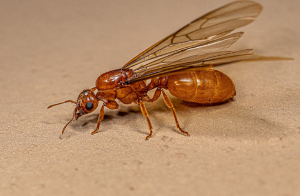

Tranopelta gilva es una especie de hormiga de la familia Formicidae y subfamilia Myrmicinae. Se caracteriza por su coloración amarillenta clara, cuerpo pequeño y hábitos predominantemente subterráneos. Las reinas reproductoras presentan alas transparentes, que utilizan durante el vuelo nupcial para dispersarse y establecer nuevas colonias.